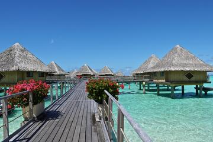
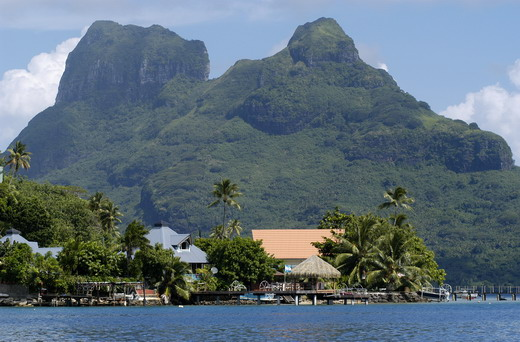
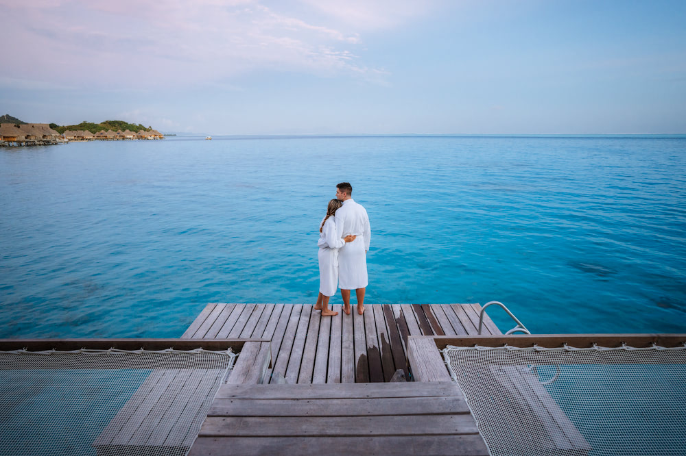

Bora-Bora se situe à 20,4 km à l'ouest-nord-ouest de Tahaa et à 51 km à l'est de Maupiti. À une distance de 252 km vers l'est-sud-est se trouvent les rivages de Tahiti.
Cette île de l'archipel de la Société a des dimensions assez réduites : l'île principale ne mesure que 8 km du nord au sud et 5 km d'est en ouest ; la superficie totale de Bora-Bora, îlots compris, étant inférieure à 40 km²1.
Les textes et articles présents sur le site OOVATU sont la propriété exclusive de Nautil Voyages et ne peuvent être reproduits ni exploités sous peine de poursuites.
Si Bora Bora attire les voyageurs du monde entier, c’est avant tout pour son lagon paradisiaque et ses merveilleux bungalows sur pilotis, véritables havres de paix privilégiés par les jeunes mariés en lune de miel en Polynésie.
L’île ravira également les amoureux de la nature avec une faune et une flore tropicale exceptionnelle et des paysages époustouflants à admirer au coucher du soleil depuis les monts Otemanu et Pahia, tous deux situés sur l’île principale.

Plage Matira
Située à la pointe sud de Bora Bora, la plage de Matira est souvent considérée comme l'une des plus belles plages de la Polynésie française. C’est la seule étendue de plage sur le continent et, étant ouverte au public, elle attire un mélange de locaux et de touristes.
Le sable blanc et l'eau claire et calme se combinent pour une vue à couper le souffle. La plage s’enroule autour d’une péninsule. C’est un endroit prisé pour regarder le coucher du soleil, faire de la plongée en apnée et prendre un bain de soleil topless.

Mont Otemanu
Le mont Otemanu est le point culminant de l'île de Bora Bora. Il domine de ses 700 et quelque mètres un lagon turquoise dont la beauté a fait la réputation de Bora dans le monde entier. Contrairement à ce que l'on pourrait croire, Bora Bora n'est pas un atoll mais une île haute, entourée d'une ceinture corallienne sur laquelle se sont créés des îlots, ou motus. Ce sont sur ces motus que l'on trouve la plupart des hôtels de Bora. Mais pas seulement. En effet, l'île compte aussi une très belle plage de sable blanc à l'une de ses extrémités : la pointe Matira, de part et d'autre d'une péninsule de quelques kilomètres. D'un côté, la plage est publique ; de l'autre, elle est réservée aux hôtels. Si l'on séjourne sur la pointe Matira, on trouvera plusieurs restaurants abordables en dehors des hôtels. A vélo, on ira jusqu'à la pointe Fitiu.

Un paradis pour la romance
Les amoureux du monde entier en rêvent, les jeunes mariés la plébiscitent pour des lunes de miel aux effluves de fleur de tiare.
Pour tous, Bora Bora incarne le summum du romantisme. Les hôtels jouent à merveille la partition avec leurs très chics bungalows sur pilotis et leurs villas flottantes offrant un accès direct à la mer
et, depuis leurs terrasses, la vue est imprenable sur les couchers de soleil flamboyants.